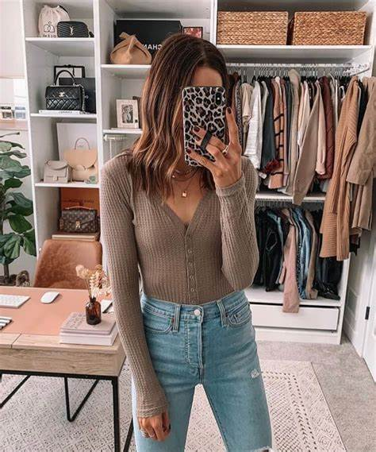
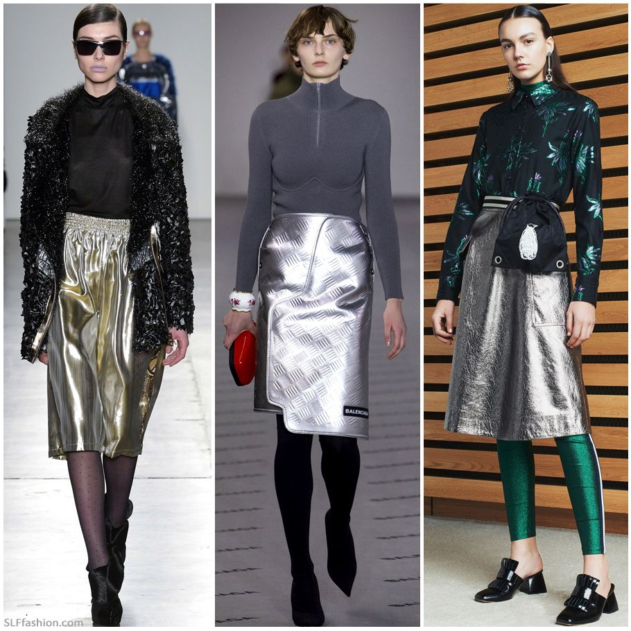
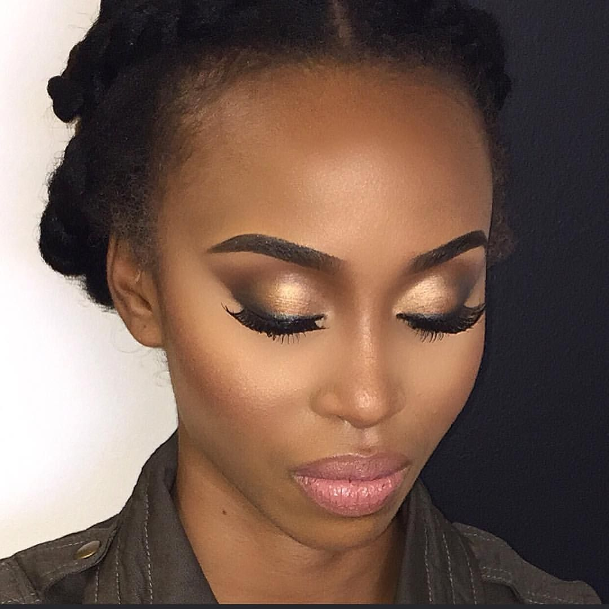
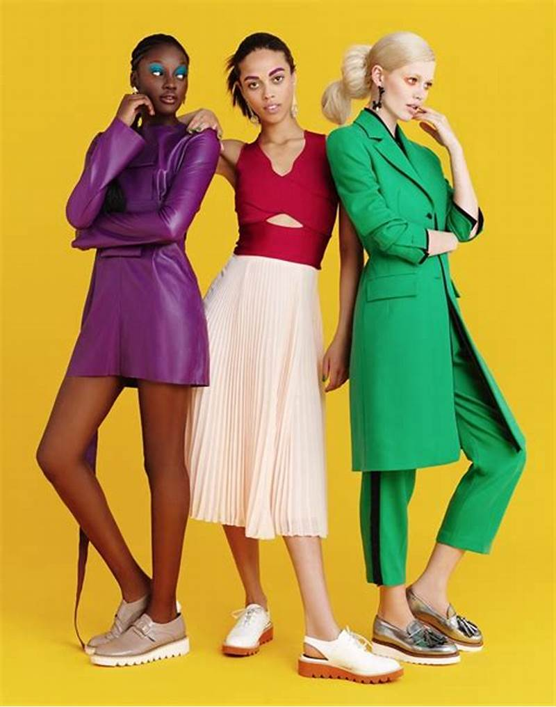
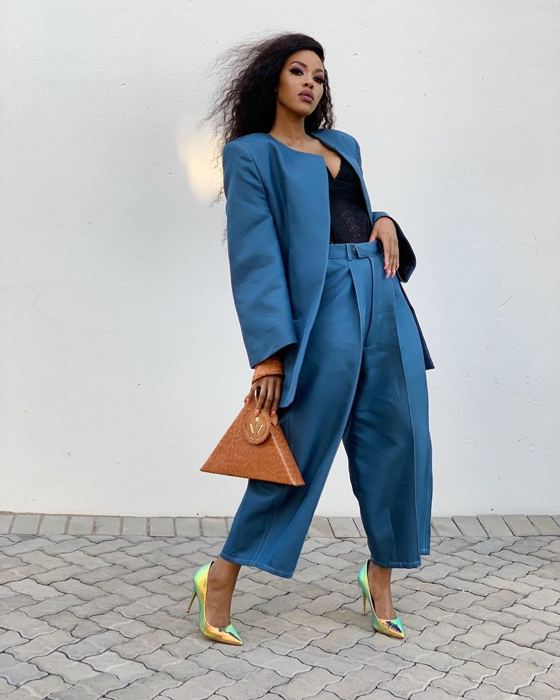
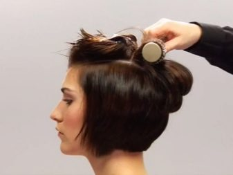
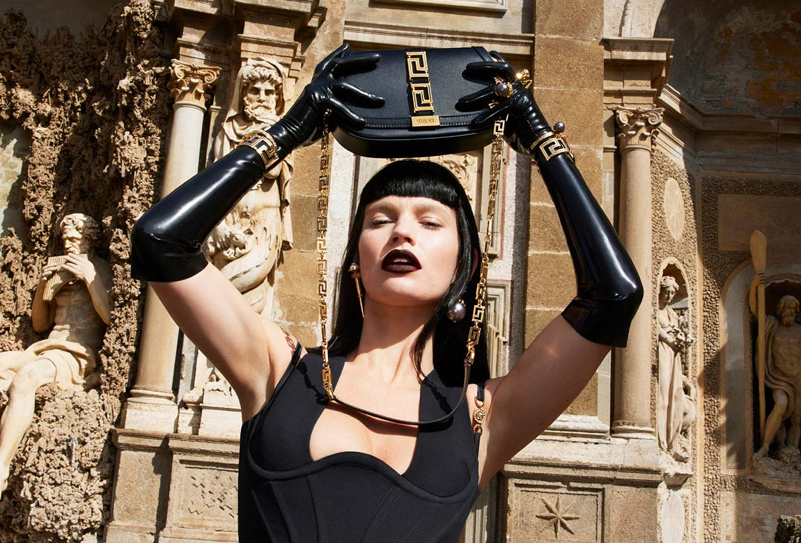

Known for her work ethic, determination and generosity, South African multi–award winning radio host, TV presenter and MC,
Global Citizen ambassador and style icon, Bonang Matheba, affectionately referred to by fans as Queen B, has firmly positioned
herself as Africa’s most sought after entertainment personality and the African continent’s number one social media darling, with over 8.58M combined social media followers
The tricks to ever glowing skin
Glowing skin isn't just about the products you use. What is even more important is looking after your skin from
the inside out. Sometimes we can forget to take good care of our skin and the effects are soon visible.
If your skin is looking dull and in need of a little TLC, try our top tips below. Combine a few different
natural options, add them into your skincare routine and you’ll soon notice your skin start to glow.

How to put together a simple classy look
look classy doesn’t necessarily involve expensive designer names.
It is more about wearing well fitted clothes in timeless design. Being
a classy woman means you are comfortable in your own skin,
therefore you do not always follow the trends unless you know they flatter your own body type.

Balenciaga's latest releases
Creative director Demna fuses that inherently Balenciaga balance of innovation
and elegance with his own avant-garde touch. The label has evolved from the
heartbeat of Paris to become one of the world’s most influential fashion brands,
boasting vast ready-to-wear and accessories lines as well as a coveted kidswear offering.
The make-up look to lift your spirits!


Wearing bold colours the correct way
Of course the best way to wear bold colours without it being
too much is to balance it out with neutrals.
Whites, greys and beige work so well with bright colours. Once you know how to wear your bright colours with neutrals,
you’ll never have to worry about going overboard with bold colours.

A look into Lootlove's edgy style
Her style has always had elements of androgyny, uniqueness and definitely, character.
She gets some of her items from her parents wardrobe down to thrift shops. High end fashion items are also
is also part of her fashion ensemble.
Diesel releases high end pieces
Diesel thrives on change: it produces no less than 3,000 new products every season and each one derives from a process of enormous creative freedom, ensuring constant innovation. The collections include: Diesel, Diesel Black Gold (the contemporary line
designed by Andreas Melbostad) and Diesel Kid. Diesel is not just apparel and denim: it’s a lifestyle

The edgy bob and smokey eye look
The classic bob allows you to experiment with style and easily blend in with any of your outfits. A wide range of possibilities will be found here by those women of fashion
who love variety in hair coloring, highlighting, coloring and using the technique of colored strands
Lamiez spills her style secrets
South African DJ, Lamiez Holworthy has debuted a new look and many of her fans are loving it. The star is known for her signature look which consists of
her unique short hairstyles, and her funky, smart-casual fashion sense that sets her apart from the rest

Versace still at it after decades
There’s no disputing Versace’s status as one of the industry’s most revered brands. In fact, the name is known far outside of fashion circles, with its Medusa Head and Greek Key motifs
regularly referenced in pop culture. We love the label’s fierce femininity and no-holds-barred glamour